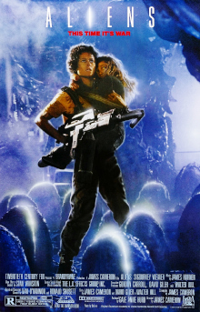

Foto posledního vetřelce
Vetřelci (anglicky Aliens) je americký sci-fi film, který v roce 1986 natočil režisér James Cameron jako pokračování úspěšného filmu Vetřelec, ve kterém Ellen Ripleyová vrací zpět na Měsíc LV-426, okupovanou vetřelci.
Protože rozpočet pro natočení filmu činil cca 20 milionů dolarů, byl snímek natáčen v Anglii v odstavené elektrárně a ve studiích společnosti Pinewood Studios. Vetřelci byli komerčně úspěšní, protože jenom v USA film vydělal $86 milionů. V celosvětovém měřítku se pak tržby vyšplhaly na $131 milionů.
Film byl nominován na celkem 7 Oscarů včetně nejlepšího ženského hereckého výkonu pro Sigourney Weaverovou. Film nakonec zvítězil v kategoriích Nejlepší střih zvukových efektů a Nejlepší vizuální efekty.
Děj

Ellen Ripleyová (Sigourney Weaver), jediná přeživší z posádky kosmické lodi Nostromo, byla nalezena v hibernačním spánku ve svém únikovém modulu po 57 letech bloudění vesmírem a se smutkem se dozvídá, že její dcera Amanda zatím vyrostla, zestárla a zemřela. Komise společnosti Weyland-Yutani je velmi skeptická k jejímu výkladu o důvodech zničení kosmické nákladní lodi a v existenci vetřelce oficiálně nevěří. Mimo jiné také z důvodu, že planeta LV-426 je již řadu let terraformována a žije tam několik desítek rodin kolonistů. Ripleyová tak přijde o svou kosmickou licenci a začne pracovat v docích jako řidička nakladačů zboží.
Později je Ripleyová navštívena zástupcem společnosti Weyland-Yutani, Carterem Burkem a důstojníkem USCM (US Colonial Marines) Gormanem. Oznámí jí, že společnost ztratila s kolonií na LV-426 jakýkoliv kontakt. Ripleyovou to moc nepřekvapí a spíše je udivená, že oba chtějí letět na planetu a ji vzít jako poradce. Ripleyová nejprve odmítne, ale když se stále probouzí s nočními můrami, rozhodne se překonat svůj strach a letět.
Produkce
Původ a inspirace
Při kompletaci předprodukce filmu Terminátor roku 1983, režisér James Cameron diskutoval možnost tvorby dalšího dílu Vetřelce (1979) s produkčním Davidem Gilerem. Cameron, jakožto fanoušek filmu Vetřelec, chtěl dát dohromady pokračování a tak po 4 dnech přeložil společnosti 20th Century Fox čtyřicetistránkový, první náčrt filmu Alien II, avšak schválení nedostal, protože první díl prý nevyprodukoval takový zisk, aby se natáčelo pokračování.
Díky 9měsíčnímu zpoždění Terminátora, které způsobilo Schwarzeneggerovo natáčení filmu Ničitel Conan, měl Cameron dostatek času na vypracování svého scénáře filmu Aliens. Během natáčení Terminátora dal Cameron dohromady cca devadesát stránek Vetřelců. Zástupci filmové společnosti byli překvapeni a slíbili mu, že pokud bude Terminátor úspěšný, bude moci režírovat Vetřelce.
Speciální edice
Speciální edice filmu Vetřelci byla vydána roku 1992 na laserdiscu a VHS. Šlo o verzi filmu, která obsahovala celých sedmnáct, původně vystřižených, minut. Ve vystřižených scénách je například moment ve kterém Ripleyová zjišťuje, že její dcera zemřela věkem, nebo když rodiče Newt objevují ztroskotanou loď, která byla k vidění ve filmu Vetřelec a otec Newt je napaden Facehuggerem. V neposlední řadě stojí za zmínku vystřižené scény, kdy mariňáci používají k opevnění se v části komplexu automatické kulomety, které likvidují útočící vetřelce bez přítomnosti obsluhy.